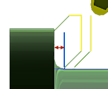

<div id="noDragClearance"><p>面の端に到達する前に停止距離を指定します。工具が退避し切削方向を変更します。</p>
<table class="tipTable" cellspacing="10">
<tr>
<td><center></center></td>
</tr><tr>
<td><center><p><b>ドラッグ仕上げ面からの距離</b></p></center></td>
</tr></table>
</div>